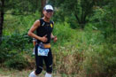
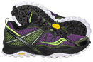
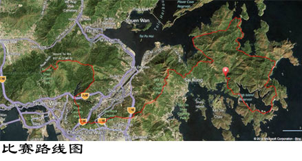
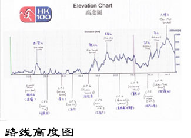

益跑首页
小工具
马德民：港百盘点 重要的是结束而非开始
2012年9月3日的《时代》杂志以《盲者的信念》为标题，介绍了肯尼亚盲人跑者亨利 万约基的奋斗故事。38岁的亨利曾在悉尼和北京残奥会上获得5000米金牌
VibramHK100：越野盛会 内地名腿表现不俗
第三届Vibram HK100落幕 中国内地和香港选手称雄
2013年VibramHK100赛事圆满结束
VibramHK100：运艳桥夺冠 男子三甲已决
1300名跑手竞逐Vibram香港100（VibramHK100）
VIBRAM非凡之队际会香江 彰显越野跑极限探险本色
更多>>
珊瑚：2013年Vibram-HK100 在奔跑中遇见自己,遇见爱
Vibram香港100，是一项考验参赛者耐力的野外100公里长跑赛事。整条赛道，以香港著名徒步路线麦理浩径为主线，起点为香港西贡半岛北潭涌
铁翼横空：挑战自我的享受：2013VibramHK100
kaka：100000m-2013 vibram HK100
喃喃：首赴香港 首战港百 难忘退赛！！！
蔡英元：2013HK100 把脚步跑成心跳
邢如伶：2013HK100中发生的第一次和第二次
马拉松Sean：2013年HK100赛记上篇---万水千山总是
更多>>

Vibram HK100：内地跑者风采榜（一）
Vibram HK100的内地参赛者，从2011年首届赛事时的寥寥2人（总参赛人数200人），到2012年第二届时的约60人（总参赛人数700人），再到2013年的300人（总参赛人数1200人），可以说呈现出井喷式的增长。这些内地跑者的身影和话语，也将伴随着他（她）们的脚步，在该赛事的发展历程中，留下浓墨重彩的一笔。
Vibram HK100：内地跑者风采榜（二）
Vibram HK100：内地跑者风采榜（三）
Vibram HK100：内地跑者风采榜（四）
Vibram HK100：内地跑者风采榜（五）
Vibram HK100：内地跑者风采榜（六）
Vibram HK100：内地跑者风采榜（七）
更多>>

越野跑兴起 越野鞋或成新宠
在大自然的青翠郊野上，远赴风景如画的茂密山区，抛开忧虑，来一场奔放的越野跑吧，又或者享受一下赤足行走的自由舒适。
VFF首款极简越野跑五指鞋Spyridon首秀香港100
NEW BALANCE MINIMUS MT00
点评11双Gore-Tex跑步鞋
【TECNICA】DEMON MAX LX MS/WS
石砚秀 : 美津浓越野跑鞋Ascend7&Ascend6对比评测
青出于蓝：网友评2代目TNF Single-Track越野跑鞋


{kind=link}
{kind=link}